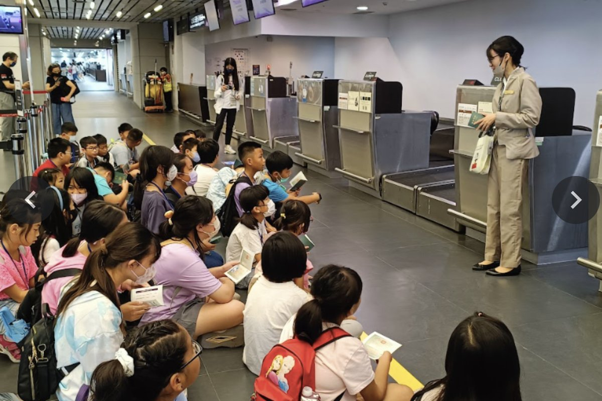

Aviation Tour at Taichung International Airport臺中國際機場航空參訪體驗
Students embarked on an inspiring aviation tour to Taichung International Airport and AIDC Aerospace Education Park. We had the chance to personally explore the fascinating world of flight.
Students not only got a close-up look at various military and civilian aircraft but also transformed into little pilots by trying on cool flight suits. Under the guidance of professional instructors, we delved into the structure of airplanes and the principles of flight.
We even had a hands-on experience in a flight simulator, feeling the thrill of soaring through the skies. This journey combined academic learning with hands-on activities, leaving students with a profound sense of accomplishment and a deeper interest in the field of aviation.
Under the guidance of instructors, students explored various aircraft, from sleek fighter jets to intricate small planes, each one sparking excitement.
Sitting in the cockpit, we transformed into little pilots! Although it was a simulation, students were serious about operating the controls, as if they were about to take off.
We used our imagination to build our own model planes. This simple and fun activity not only developed our hands-on skills but also allowed us to learn the scientific principles of flight through play!
At the airport lobby, we gathered at the check-in counter to learn about airport operations from a professional. From baggage check-in to boarding procedures, every step was full of knowledge.

學生踏上一場啟發人心的航空參訪之旅，前往臺中國際機場與漢翔航空教育園區，親身探索飛行的奧妙世界。
孩子們不僅近距離觀察軍機與民航機，更化身小小飛行員，穿上專業飛行裝備。在專業教練的引導下，深入認識飛機的結構與飛行原理。
我們甚至體驗了飛行模擬器，感受翱翔天際的興奮。這趟旅程將學術知識與動手體驗結合，讓學生帶著滿滿的成就感與對航空領域更深的興趣返校。
在教練的引導下，學生們仔細觀察了從炫酷戰機到精巧小型機等各式飛行器，每一架都讓人興奮不已。
坐進駕駛艙，我們瞬間化身小小飛行員！雖然是模擬，但同學們認真地操作著儀器，彷彿真的要起飛了。
我們運用想像力組裝自己的模型飛機。這個簡單又好玩的活動不但訓練了手作能力，也讓我們在遊戲中學到飛行的科學原理！
在機場大廳，我們聚集在報到櫃台前，由專業人員為我們介紹機場運作。從行李託運到登機流程，每一步都充滿知識。